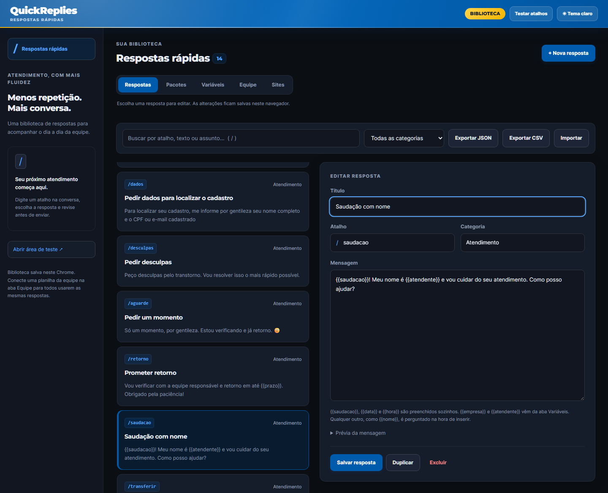

Extensão para Chrome e Edge
Digite / e responda mais rápido.
Respostas prontas no campo de mensagem de qualquer chat web. A extensão só preenche o campo: quem revisa e envia é o atendente.
Experimente aqui
Esta página roda o mesmo código da extensão, com uma biblioteca fictícia na memória. Nada é salvo nem enviado.
/ abre o menu ↑↓ escolhe Tab ou Enter insere Esc fecha
Como funciona
- Ative no seu chat. Abra a conversa, clique no ícone da extensão e em Ativar nesta aba. O site fica salvo e, da próxima vez, o / já funciona sozinho.
- Digite / no campo de mensagem e filtre por atalho, título, categoria ou texto, sem se preocupar com acentos.
- Revise e envie. A resposta entra no campo com as variáveis preenchidas. Nada é enviado sem você.
Biblioteca da equipe
O gestor mantém uma planilha do Google; cada atendente cola o link uma vez e a extensão atualiza a cada 30 minutos.
Pacotes de partida
Atendimento geral, loja online, suporte técnico, agendamentos e financeiro. Adicione ou substitua, com desfazer.
Importa e exporta
JSON ou CSV para Excel e Google Planilhas, com proteção contra fórmulas na exportação.
Sem servidor
Tudo fica no navegador. A extensão não lê nem guarda as conversas. Política de privacidade.

In English
Quick Replies is a Chrome extension for support agents who answer customers in a web chat. Type / in the message box, pick a canned reply with the arrow keys and insert it with Tab or Enter. Variables such as the greeting, date and agent name fill themselves in. The extension never sends anything for you, has no server and keeps your library in the browser. The interface is in Portuguese; the demo above uses fictitious reply libraries.